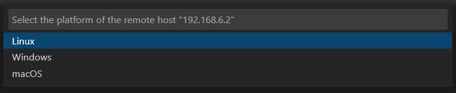

The MBot-Omni is an omnidrive robot platform which we will be programming in ROB 102. This tutorial contains instructions on how to use it and program it.
The MBot-Omni is an omnidrive robot platform which we will be programming in ROB 102. This tutorial contains instructions on how to use it and program it.
This page has the following parts:
The MBot-Omni is an omnidrive robot platform which we will be programming in ROB 102. This tutorial contains instructions on how to use it and program it.
This page has the following parts:
To turn the robot on, flick the switch on the power bank to ON. The red light on the Raspberry Pi should turn on. The lights on the Beaglebone should turn off and flash.
To turn the robot off, flick the switch on the power bank to OFF. Then, press the power button, marked POW, on the Beaglebone. Wait for all the lights to turn off, on both boards.
Each robot should be marked with a unique, four digit ID (0001, 0002, etc.). When turned on, the robot will have two access points: OMNI-RPI-XXXX and OMNI-BBB-XXXX (replace XXXX with the ID of the robot). The password for both networks is iloverobots. We will primarily be using the RPI network.
We will program the robot using VSCode's Remote Development extension. The extension allows us to connect to a remote host in a VSCode window and write code on its filesystem.
This tutorial assumes you have followed the instructions for installing Git and VSCode.
First, we need the VSCode Remote Development extension, which will allow us to connect VSCode to the robot's environment. Open VSCode and click on the "Extensions" icon  in the toolbar on the left. Search for "Remote Development" and select the extension called "Remote Development." Click "Install" to install it.
in the toolbar on the left. Search for "Remote Development" and select the extension called "Remote Development." Click "Install" to install it.

Now we will tell VSCode how to connect to the Raspberry Pi board on the robot. First, power on the robot and connect to the Wifi network OMNI-RPI-XXXX, replacing "XXXX" with the ID of your robot. The ID should be written on a label on the robot. The password for the network is iloverobots. It might take a few seconds for the network to appear. The robot is on if the green and red battery indicator is lit up on the Beaglebone board and if the blue LEDs by the power button are flashing, and the red light is lit up on the Raspberry Pi.
To add the Raspberry Pi as a remote host in VSCode, click on the "Remote Explorer" in the toolbar on the left. Then, select the + to add a new host:

In the box that appears, type in ssh followed by the robot's address, exactly as below (all robots have the same address and username):
ssh pi@192.168.3.1Press Enter, then select the default configuration file when the option appears:

To connect to the Raspberry Pi, open the "Remote Explorer" tab again, and select the new remote host you just added. Click on the icon to the right of the address to connect to the host in a new window.

If you are already in a new VSCode window with no other files open, you can also right-click on the host address to connect in the current window. You will be asked to select a platform. Select "Linux".
You will be asked for the password to the Raspberry Pi. This is different from the wifi password. The password is i<3robots!. The first time you connect, it will take a few minutes for VSCode to do some setup on the Raspberry Pi. You should see the address of the Raspberry Pi on the bottom left of the VSCode window.

In the VSCode window which is connected to the robot, open a terminal by clicking on "Terminal" > "New Terminal." A terminal will open on the Raspberry Pi. You can type command line commands in this terminal just like we have done on your computer or in a Docker container.

We will clone repositories onto the robot using SSH. This means that you allow the robot's computer to connect to your GitHub account without entering your username and password (or access token) each time. The robot needs to have SSH keys to do this. First, check if there are SSH keys already by listing all the keys in the folder .ssh/. In the robot terminal in the VSCode remote window, type:
ls ~/.ssh/
If the file ~/.ssh/id_rsa.pub exists:
Go to step 2.
If the file ~/.ssh/id_rsa.pub does not exist:
We need to generate SSH keys. In the robot terminal in the VSCode remote window, type:
ssh-keygenLeave the default file paths as is, and leave the passphrase blank. You will just be pressing "Enter" (or "Return" on Mac) for every option that shows up.

In the robot's terminal, type:
cat ~/.ssh/id_rsa.pubThe cat command prints the contents of a file to the terminal. Copy the contents of the file that prints out. Remember, Ctrl-C means quit in the terminal. Right-click to copy, or use Ctrl-Shit-C.

Connect back to your regular WiFi access point. Go to GitHub, and click on your profile picture in the top right corner, then click "Settings". Select "SSH and GPG keys", then click the green "New SSH key" button:

Copy the full contents of the key you printed out in step 2 into the box and add the key.

Connect back to the robot's WiFi access point. You may need to reload the remote VSCode window, or close it and reconnect. Open a terminal to the robot in VSCode and clone the relevant repository in the home directory. You must use the SSH address to the repository. When you get the address on the repository page, click the "SSH" option.

The address should be of the form git@github.com:robotics102/REPO-NAME.git.
Since you added the key to your GitHub account, you will not be asked for your password when cloning. If you can't clone the repository after adding the SSH keys to your account, see the course staff.
You can open a folder on the robot for editing in VSCode, like you do for folders on your own computer. To do this, in the VSCode remote window, go to the explorer, or do "File" > "Open Folder..." (just "Open..." on Mac). In the command pallette that opens, type the path to the repository you cloned on the Raspberry Pi (for example, /home/pi/my-code-folder).